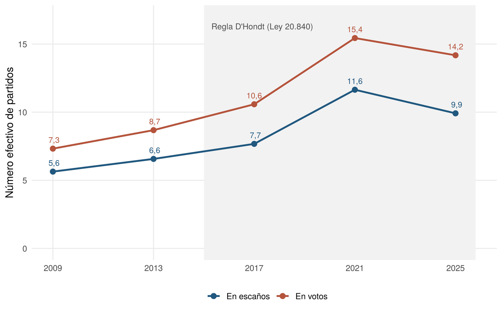
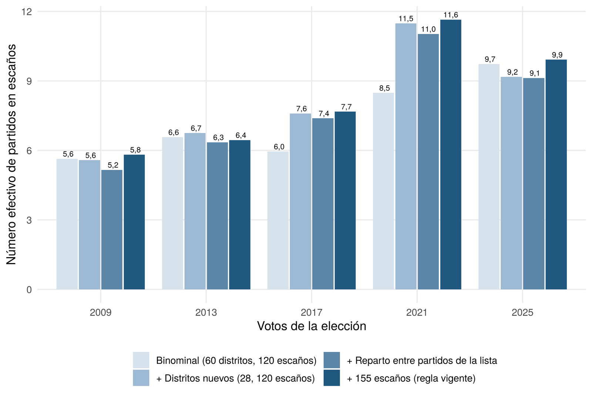
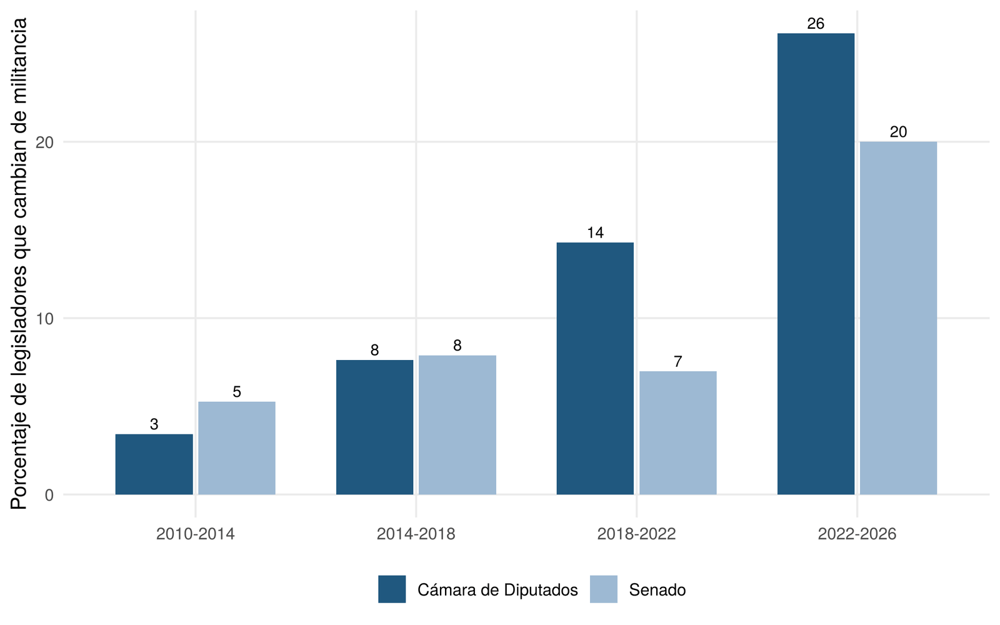
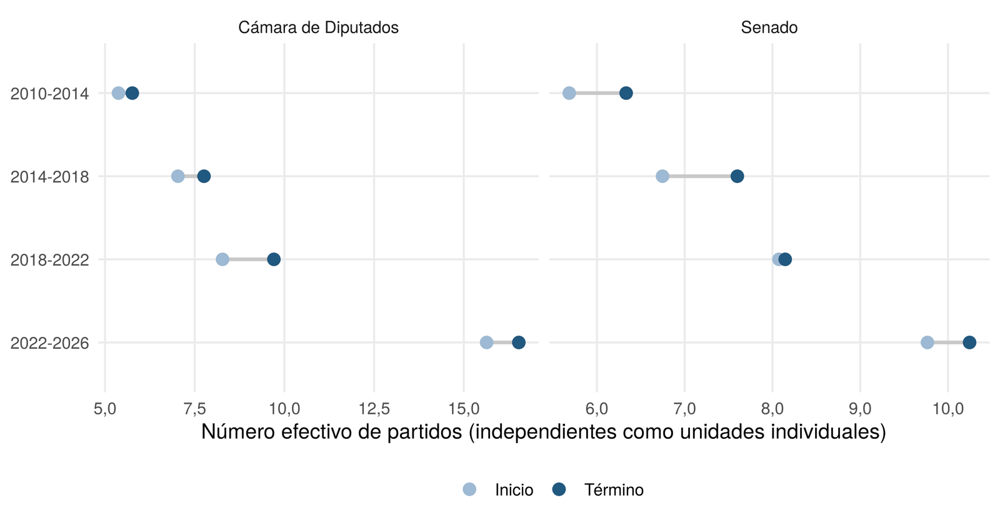

Más allá de la regla: fragmentación electoral y parlamentaria en Chile tras el fin del sistema binominal, 2009–2026
Entre 2009 y 2025, el número efectivo de partidos en la Cámara de Diputados pasó de 5,6 a cerca de 10, con un máximo de 11,6 en 2021. En el mismo período, la reforma de 2015 (Ley N.° 20.840) reemplazó el sistema binominal por un sistema proporcional con el método D'Hondt, por lo que una explicación frecuente atribuye a la reforma el aumento de la fragmentación.
Este documento de trabajo pregunta cuánto de ese aumento se debe a la nueva regla de conversión de votos en escaños y cuánto a la fragmentación del voto, y si la fragmentación continúa después de la elección, durante la legislatura. Esta entrada resume los hallazgos; el documento completo desarrolla el marco teórico, el método y las limitaciones.
Datos y métodos
El análisis usa los resultados por candidato de las elecciones de diputados y senadores de 2009 a 2025 del Servicio Electoral (SERVEL), el registro de militancias de la Cámara y una reconstrucción de la militancia de los senadores a partir de las reseñas parlamentarias de la Biblioteca del Congreso Nacional. El diseño aprovecha que los 60 distritos del sistema binominal quedan íntegramente contenidos en los 28 distritos nuevos, lo que permite aplicar cada regla a los votos de la otra época manteniendo fijos los votos. La asignación reproduce, candidato por candidato, los 670 diputados electos en el período. Todo el procesamiento es reproducible en R.
Cinco hallazgos
1. El voto se fragmentó el doble
El número efectivo de partidos en votos de la Cámara pasó de 7,3 en 2009 a 15,4 en 2021 y 14,2 en 2025. El cambio más pronunciado ocurrió entre coaliciones. Con el binominal, el número efectivo de listas se mantuvo cerca de 2,6, y en 2021 llegó a 6,1.

2. La regla por sí sola no explica el aumento
Con los votos de 2009 y 2013, la regla D'Hondt habría producido casi la misma Cámara que el binominal, con diferencias de +0,2 y −0,1 en el número efectivo de partidos en escaños. Con los votos de 2021, el binominal habría reducido ese número de 11,6 a 8,5, pero aun así habría llevado a 17 partidos a la Cámara, frente a 8 en 2009 y 2013.
3. El efecto mecánico viene de la magnitud de los distritos
Como el binominal es el método D'Hondt aplicado a distritos de dos escaños, la reforma no cambió la fórmula, sino la magnitud de los distritos, el reparto de los escaños entre los partidos de cada lista y el tamaño de la Cámara. Al separar esos componentes, casi toda la diferencia entre ambas reglas se debe al paso a distritos de entre 3 y 8 escaños. El aumento a 155 escaños y el reparto entre partidos pesan poco.

4. La fragmentación continúa durante la legislatura
La proporción de diputados que cambió de militancia durante su período pasó de 3% en 2010–2014 a 14% en 2018–2022 y 26% en 2022–2026. En el Senado, se mantuvo entre 5% y 8% hasta 2022 y subió a 20% en 2022–2026. Muchos de esos cambios fueron hacia partidos creados durante el mismo período.

5. Cada período termina más fragmentado
En ambas cámaras y en los cuatro períodos, el número efectivo de partidos fue mayor al término que al inicio. La fragmentación del Congreso resulta así de tres procesos distintos, la dispersión del voto, la conversión de votos en escaños y los cambios de militancia durante la legislatura.

Alcance
El contrafactual mantiene fijos los votos, por lo que mide el efecto mecánico de la regla y no las respuestas estratégicas de partidos y electores. El aumento de las listas y los candidatos por distrito sugiere que la reforma influyó sobre todo a través de la oferta. El voto obligatorio cambió el electorado en 2025, y la medición por militancia no siempre coincide con la bancada en que actúa cada legislador. Los datos y el código son públicos, de modo que el análisis puede actualizarse con cada nueva elección.
Cómo citar
Bottinelli Baltra, L. (2026). Más allá de la regla: fragmentación electoral y parlamentaria en Chile tras el fin del sistema binominal, 2009–2026 (Documento de trabajo N.° 4). https://doi.org/10.5281/zenodo.23924456
El código en R y los datos procesados de esta versión están archivados en Zenodo: https://doi.org/10.5281/zenodo.23924439.
← Volver al blog